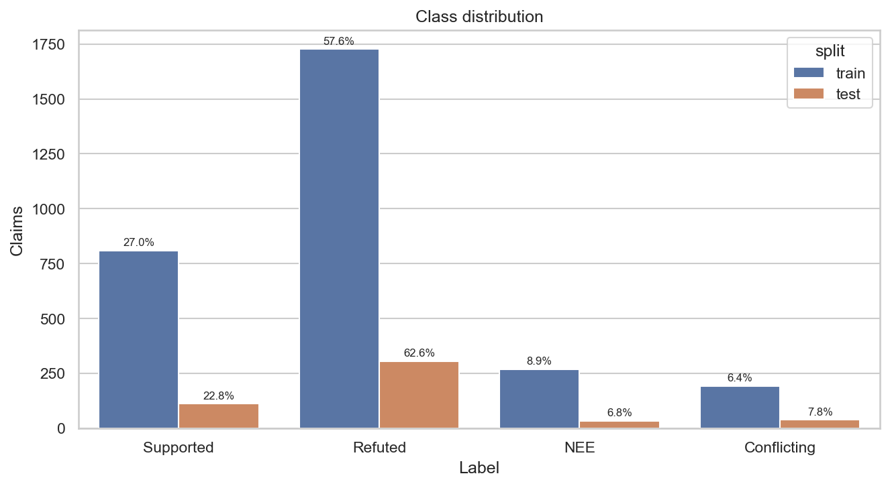
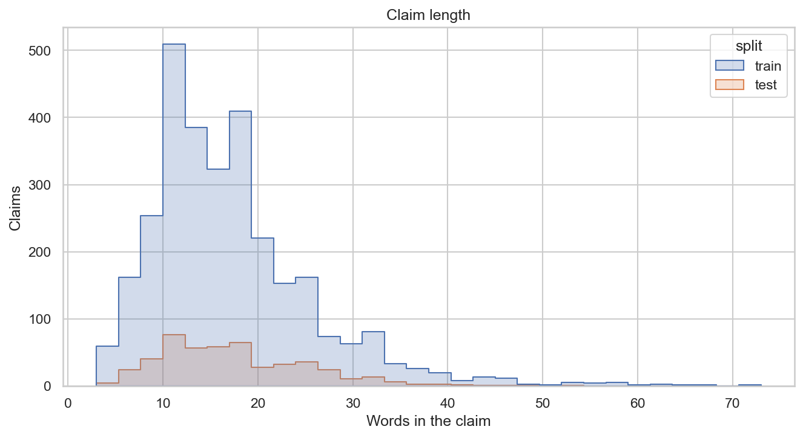
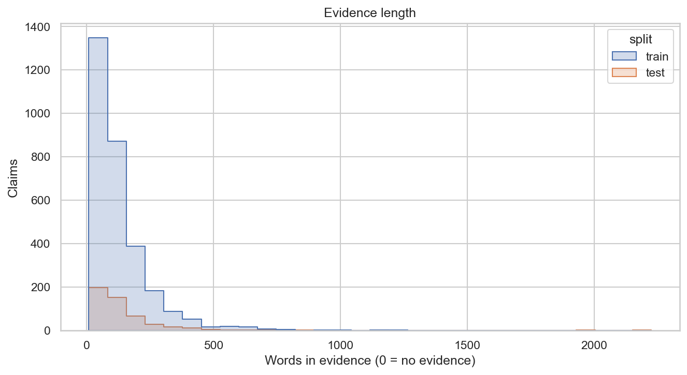
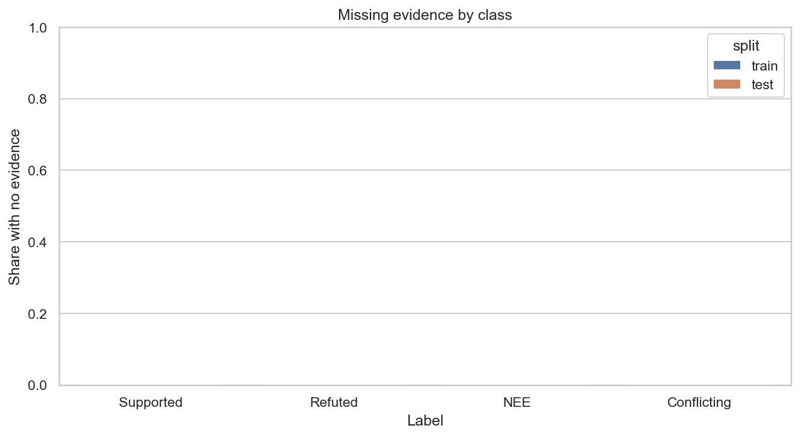
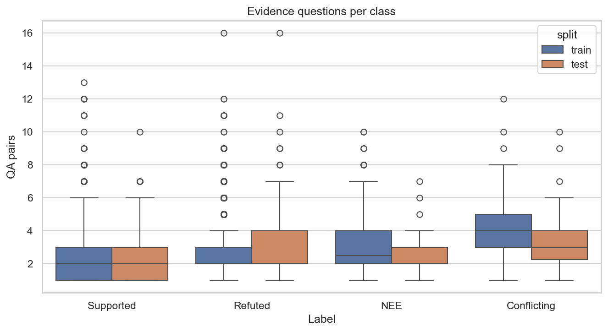
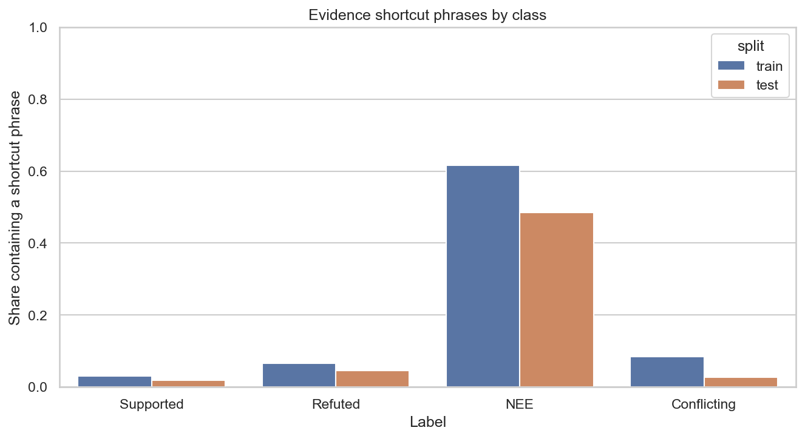

Data
AVeriTeC: 4,568 claims, 50 organizations. Train for fitting, dev for evaluation. Paper · Release · CC BY-NC 4.0.
Preprocessing
- Normalize text
- Map the four verdicts
- Drop empty claims and blank labels
- Deduplicate claims
- Remove train overlap from dev
- Evidence = first three answers per question
- Justification is never a feature
Processed counts
chenxwh_hf
| Split | Loaded | Dropped invalid | Dropped duplicates | Removed overlap | Final | Missing evidence |
|---|---|---|---|---|---|---|
| train | 3068 | 1 | 71 | — | 2996 | 0.0% |
| test | 500 | 0 | 9 | 4 | 487 | 0.0% |
Class counts
| Split | Label | Count |
|---|---|---|
| train | Supported | 809 |
| train | Refuted | 1727 |
| train | Not Enough Evidence | 268 |
| train | Conflicting Evidence/Cherrypicking | 192 |
| test | Supported | 111 |
| test | Refuted | 305 |
| test | Not Enough Evidence | 33 |
| test | Conflicting Evidence/Cherrypicking | 38 |
Summary by class
| split | label | count | share | mean_claim_len | mean_evidence_len | missing_evidence_share |
|---|---|---|---|---|---|---|
| train | Supported | 809 | 0.2700 | 17.0222 | 116.4141 | 0.0000 |
| train | Refuted | 1727 | 0.5764 | 17.0423 | 123.3075 | 0.0000 |
| train | Not Enough Evidence | 268 | 0.0895 | 18.3060 | 109.2948 | 0.0000 |
| train | Conflicting Evidence/Cherrypicking | 192 | 0.0641 | 16.0104 | 210.4271 | 0.0000 |
| test | Supported | 111 | 0.2279 | 16.6667 | 115.6577 | 0.0000 |
| test | Refuted | 305 | 0.6263 | 17.5246 | 146.9213 | 0.0000 |
| test | Not Enough Evidence | 33 | 0.0678 | 17.4848 | 128.4242 | 0.0000 |
| test | Conflicting Evidence/Cherrypicking | 38 | 0.0780 | 20.3947 | 182.5526 | 0.0000 |
Exploratory figures






Watch the “no answer” phrase. It is a shortcut for Not Enough Evidence. Justification never enters the features.